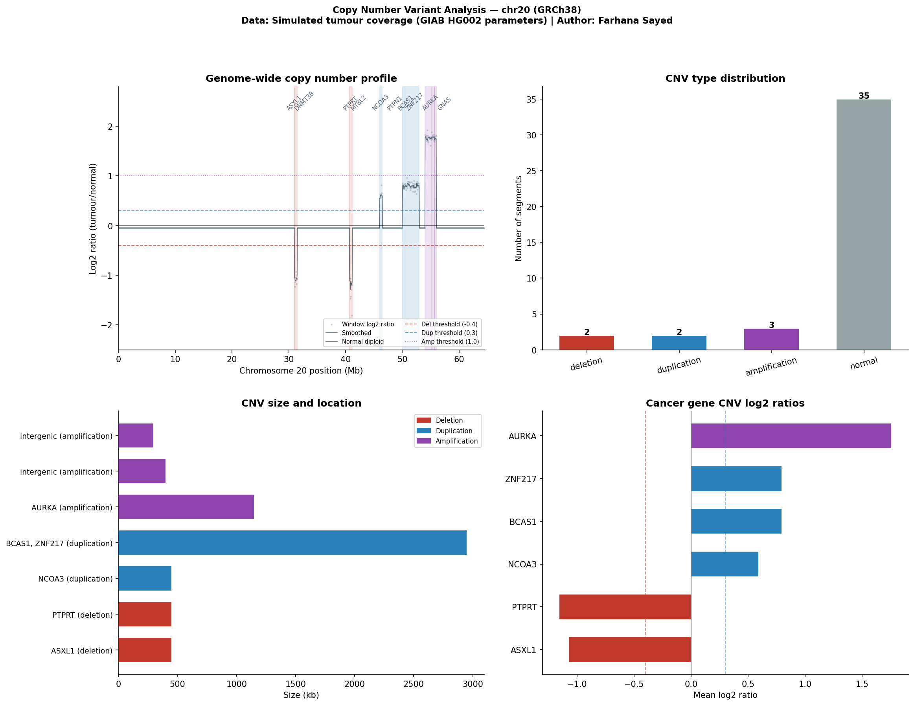

Method: Log2 ratio analysis + circular binary segmentation | Assembly: GRCh38 | Window size: 50kb | Generated: 13 Apr 2026 10:31
Author: Farhana Sayed | B.Tech Bioinformatics & Data Science, D.Y. Patil | Module 2 of 3 — Clinical Variant Interpreter

| Location | Size | Windows | Log2 ratio | Est. CN | Type | Genes | Clinical significance |
|---|---|---|---|---|---|---|---|
chr20:31,025,000–31,475,000 |
450.0 kb | 10 | -1.072 | 1.0 | DELETION | ASXL1 | ASXL1: deletion of tumour suppressor — likely pathogenic |
chr20:40,725,000–41,175,000 |
450.0 kb | 10 | -1.157 | 0.9 | DELETION | PTPRT | PTPRT: deletion of tumour suppressor — likely pathogenic |
chr20:46,025,000–46,475,000 |
450.0 kb | 10 | 0.595 | 3.0 | DUPLICATION | NCOA3 | NCOA3: duplication of oncogene — likely pathogenic |
chr20:50,025,000–52,975,000 |
2950.0 kb | 60 | 0.797 | 3.5 | DUPLICATION | BCAS1, ZNF217 | BCAS1: duplication of oncogene — likely pathogenic | ZNF217: duplication of oncogene — likely pathogenic |
chr20:54,025,000–55,175,000 |
1150.0 kb | 24 | 1.76 | 6.8 | AMPLIFICATION | AURKA | AURKA: amplification of oncogene — likely pathogenic |
chr20:55,225,000–55,625,000 |
400.0 kb | 9 | 1.782 | 6.9 | AMPLIFICATION | intergenic | no known cancer gene overlap |
chr20:55,675,000–55,975,000 |
300.0 kb | 7 | 1.743 | 6.7 | AMPLIFICATION | intergenic | no known cancer gene overlap |